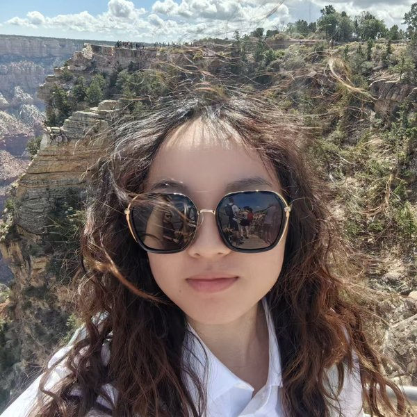
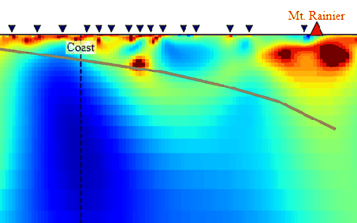
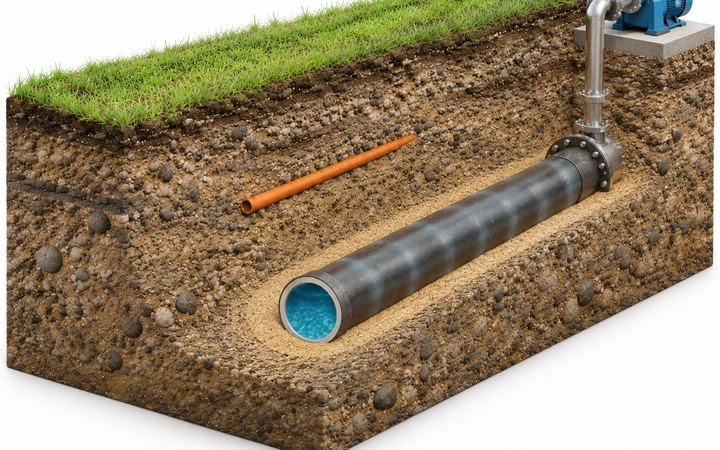
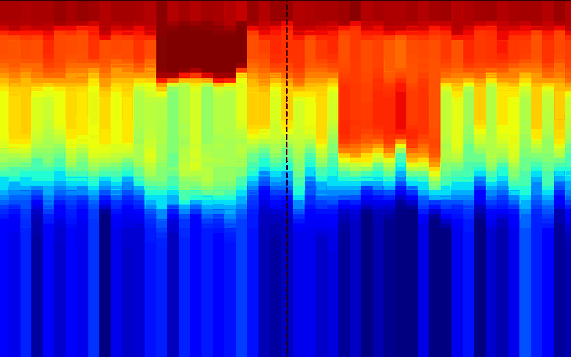
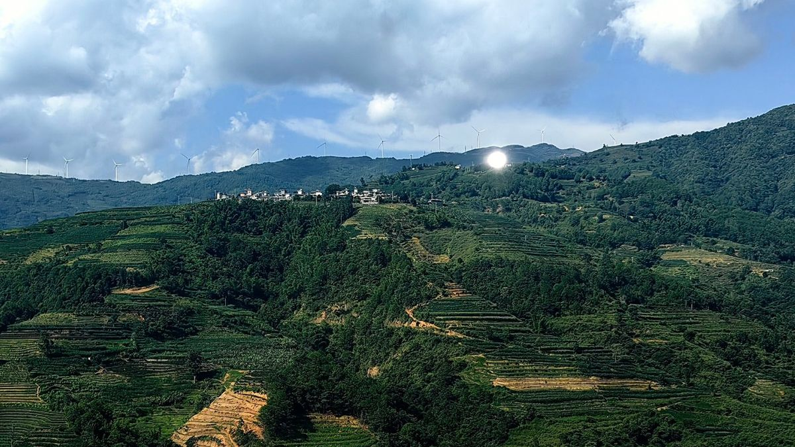
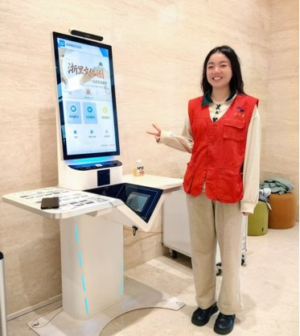

Geophysics should not be disconnected from society.
Xinran Liu
I work on geophysical imaging and inversion, and on using fiber-optic sensing to monitor environmental change.

XL- NowApplying to PhD programs for Fall 2027.
- Dec 2026Poster at the AGU Annual Meeting, San Francisco — listening to a water main.
Research
I started from the inverse problem, then moved to the data themselves and to learning-based inversion.

Robust EM imaging
Optimal transport keeps resistivity images stable when data are distorted.
Magnetotellurics · Optimal transport · InversionRead more →
Listening to a water main
A telecom fiber picks up seasonal changes and guided waves from the water in a buried main.
DAS · Ambient noise · Water guided wavesRead more →
Imaging with uncertainty
Near-surface velocity images that report how much to trust them.
Surface waves · Uncertainty · Deep learningRead more →Publications & Presentations
- 2026Liu, X., Jin, G., Li, P., Martin, E. R., Cheng, F., & He, P. Telecom fiber as a passive thermometer of water inside a buried transmission main: Implications for data-center cooling-water systems. AGU Annual Meeting 2026, San Francisco. Poster
- 2026Liu, X., Chen, X., Tang, Z., & Yang, B. Two-dimensional magnetotelluric inversion using optimal transport and automatic differentiation. EGU General Assembly 2026, Vienna. Oral
- 2026Liu, X., Chen, X., Tang, Z., & Yang, B. Beyond the ℓ2 norm: Robust electromagnetic inversion against noise and distortion using graph-space optimal transport. To be submitted to IEEE Transactions on Geoscience and Remote Sensing. In prep.
- 2025Liu, X., Chen, X., Tang, Z., & Yang, B. Progress of one-dimensional magnetotelluric inversion based on optimal transport. Chinese Geoscience Union Annual Meeting, Chengdu. Poster
Selected Honors
- Shen Shanhong Outstanding Undergraduate Award — sole recipient in the School of Earth Sciences (2026)
- Chu Kochen Honors College In-Depth Research Scholarship — one of 10 projects college-wide (2026)
- Third Prize & Most Popular Poster Award, Academic Poster Competition — the only undergraduate awardee among graduate students (2026)
- Qiushi Eaglet Program grant for overseas research (2026)
Beyond the Lab
Extracurricular
- “Voice of Geoscience” museum team2024–2026
Co-founded and supervised the student docent team that keeps the School’s Earth Science Museum open every day; trained docents and guided school groups and the public.
- Lingyun Symphony Orchestra2023–2025
Head of the brass section: ran sectional rehearsals and performed in three university-wide concerts.
- Rural field study, Yunnan2025
A week with tea growers in Jingdong County studying rural revitalisation; co-wrote the team report.

Volunteering
330+ hours of service · University Five-Star Volunteer (2026)

- Online tutor2026
Taught English five lessons a week to a third-grader in treatment for leukaemia, so he could keep up with school.
- Animal rescue2026
Cared for rescued stray cats at an adoption house in Hangzhou.
- Hospice care2025
Kept terminally ill elderly patients company and made handicrafts with them.
In the Field